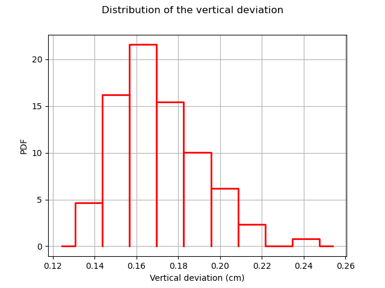
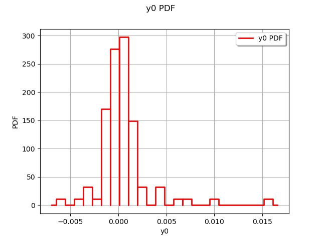
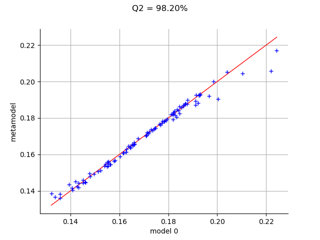

Note
Click here to download the full example code
Kriging the cantilever beam model using HMAT¶
In this example, we create a kriging metamodel of the cantilever beam. We use a squared exponential covariance model for the kriging. In order to estimate the hyper-parameters, we use a design of experiments which size is 100.
Definition of the model¶
import openturns as ot
import openturns.viewer as viewer
from matplotlib import pylab as plt
ot.Log.Show(ot.Log.NONE)
We first load the model from the usecases module :
from openturns.usecases import cantilever_beam as cantilever_beam
cb = cantilever_beam.CantileverBeam()
We define the model which evaluates the output Y depending on the inputs.
model = cb.model
Then we load the distribution of the input random vector.
dimension = cb.dim # number of inputs
myDistribution = cb.distribution
We use a transformation because data contain very large values.
transformation = myDistribution.getIsoProbabilisticTransformation()
Create the design of experiments¶
We consider a simple Monte-Carlo sampling as a design of experiments. This is why we generate an input sample using the getSample method of the distribution. Then we evaluate the output using the model function.
sampleSize_train = 100
X_train = myDistribution.getSample(sampleSize_train)
Y_train = model(X_train)
The following figure presents the distribution of the vertical deviations Y on the training sample. We observe that the large deviations occur less often.
histo = ot.HistogramFactory().build(Y_train).drawPDF()
histo.setXTitle("Vertical deviation (cm)")
histo.setTitle("Distribution of the vertical deviation")
histo.setLegends([""])
view = viewer.View(histo)

Create the metamodel¶
In order to create the kriging metamodel, we first select a constant trend with the ConstantBasisFactory class. Then we use a squared exponential covariance model.
basis = ot.ConstantBasisFactory(dimension).build()
covarianceModel = ot.SquaredExponential([1.]*dimension, [1.0])
We rely on H-Matrix approximation for accelerating the evaluation. We change default parameters (compression, recompression) to higher values. The model is less accurate but very fast to build & evaluate.
ot.ResourceMap.SetAsString("KrigingAlgorithm-LinearAlgebra", "HMAT")
ot.ResourceMap.SetAsScalar("HMatrix-AssemblyEpsilon", 1e-3)
ot.ResourceMap.SetAsScalar( "HMatrix-RecompressionEpsilon", 1e-4)
Finally, we use the KrigingAlgorithm class to create the kriging metamodel, taking the training sample, the covariance model and the trend basis as input arguments.
algo = ot.KrigingAlgorithm(transformation(X_train), Y_train, covarianceModel, basis)
algo.run()
result = algo.getResult()
krigingMetamodel = result.getMetaModel()
The run method has optimized the hyperparameters of the metamodel.
We can then print the constant trend of the metamodel, which have been estimated using the least squares method.
result.getTrendCoefficients()
Out:
[class=Point name=Unnamed dimension=1 values=[0.174399]]
We can also print the hyperparameters of the covariance model, which have been estimated by maximizing the likelihood.
result.getCovarianceModel()
SquaredExponential(scale=[3.2328,1.76623,2.31046,2.9777], amplitude=[0.0101131])
Validate the metamodel¶
We finally want to validate the kriging metamodel. This is why we generate a validation sample which size is equal to 100 and we evaluate the output of the model on this sample.
sampleSize_test = 100
X_test = myDistribution.getSample(sampleSize_test)
Y_test = model(X_test)
The MetaModelValidation classe makes the validation easy. To create it, we use the validation samples and the metamodel.
val = ot.MetaModelValidation(transformation(X_test), Y_test, krigingMetamodel)
The computePredictivityFactor computes the Q2 factor.
Q2 = val.computePredictivityFactor()[0]
Q2
Out:
0.9820450980214541
Since the Q2 is larger than 95%, we can say that the quality is acceptable.
The residuals are the difference between the model and the metamodel.
r = val.getResidualSample()
graph = ot.HistogramFactory().build(r).drawPDF()
view = viewer.View(graph)

We observe that the negative residuals occur with nearly the same frequency of the positive residuals: this is a first sign of good quality. Furthermore, the residuals are most of the times contained in the [-1,1] interval, which is a sign of quality given the amplitude of the output (approximately from 5 to 25 cm).
The drawValidation method allows to compare the observed outputs and the metamodel outputs.
graph = val.drawValidation()
graph.setTitle("Q2 = %.2f%%" % (100*Q2))
view = viewer.View(graph)
plt.show()

We observe that the metamodel predictions are close to the model outputs, since most red points are close to the diagonal. However, when we consider extreme deviations (i.e. less than 10 or larger than 20), then the quality is less obvious.
Given that the kriging metamodel quality is sensitive to the design of experiments, it might be interesting to consider a Latin Hypercube Sampling (LHS) design to further improve the predictions quality.
Total running time of the script: ( 0 minutes 0.352 seconds)